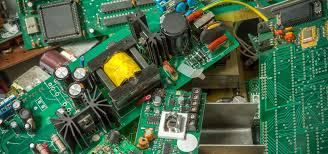
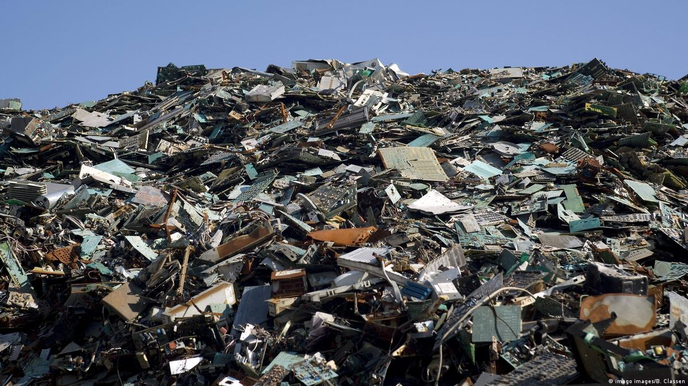

Resíduo computacional, também conhecido como resíduo eletrônico ou lixo eletrônico, são os equipamentos eletrônicos descartados ou obsoletos. A definição inclui computadores, televisores, telemóveis/celulares, entre outros dispositivos. Na União Europeia, é referido resíduo de equipamentos eletrônicos (REEE), havendo a classificação dos produtos por categoria conforme a Diretiva de Resíduos de Equipamentos Eléctricos e Electrónicos.
Os resíduos de equipamentos eletrônicos, se descartados de forma inadequada, constituem um sério risco para o meio ambiente, pois possuem em sua composição metais pesados altamente tóxicos, como mercúrio, cádmio, berílio e chumbo, além de outros compostos químicos como os BFRs (Brominated Flame Retardants). Em contato com o solo, os metais pesados contaminam o lençol freático; se queimados, os BFRs liberam toxinas perigosas ao meio ambiente. Portanto, a manipulação e processamento dos REEE, de forma incorreta e desprotegida, contamina os seres humanos que executam estas tarefas e o meio ambiente à sua volta.
